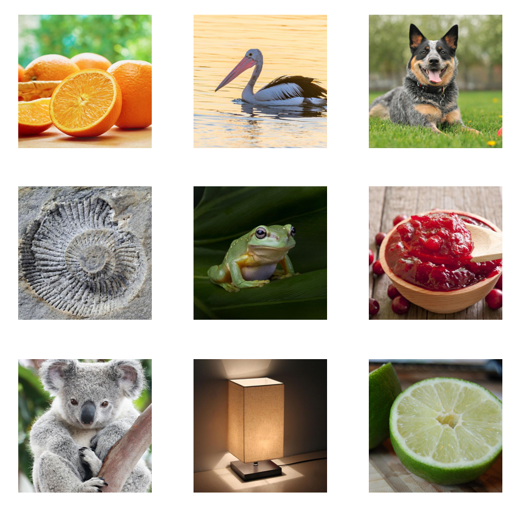
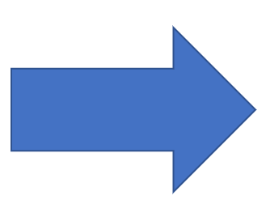

Fig.1a - Images


The Conversion function allows the user to convert a series of images into a CFS-Crafter-Mask. After which the user can then proceed to modify this sequence with modification function, or to compare with other CFS-Crafter-Mask or images using the analysis function
By clicking the add images button, the user can select multiple images to upload to CFS-Crafter. The order of the image will be based on the naming of the image file. Moreover, the user can delete any unwanted images by checking the selection column and clicking the delete selection button.
After selecting all the images, the user needs to input the necessary parameters.
The Image Update Rate is the rate at which the images is updated in the stimuli sequence, similar to Mask Update Rate in Creation. Click here for more details.
After entering the image update rate, CFS crafter will calculate the duration of the stimuli sequence based on it and the number of images selected, which will then be shown in stimuli duration.
Similar to creation, converison also allows the user to set the target RMS contrast and mean luminace value. Click here for details.